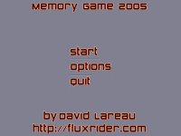
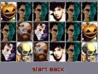
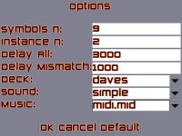

Memory Game
Game description
Memorize a snapshot of many symbols on a board, and then find the matching n-uplets for each of them.
Screenshots
|  |  |  |
Download
Memory Game (2005-07-31 update)
First Release Date: 2005-07-29
Instructions
Have a Java Virtual Machine ready
Unzip the file into any directory
Run go.bat and you are set
To customize decks, sounds and tunes, simply put your files inside the appropriate directory under resources. Decks must have one image named cover.xxx (xxx being the image format), the other images will be resized on the fly to fit the cover size. Sounds must be prepended with a rating value (higher the number, worst the case) I've tested the ogg, wav and midi file format. mp3 does not seem to work with the library I chose. Then choose your packages in the options section of the game.
Related links
Interesting Issues
Incremental Development using a spiral model
I've decided from the start to develop throw-away prototypes while developing this game.
For example, my first effort used Java SWING for the GUI and had no sound. I later reused the same game logic under a SDL GUI.
I like this throw-away approach, which allows me to improve the design instead of patching it over and over.
Layout of cards
I've worked quite a bit on a decent algorithm for the layout of the cards. At first, I thought laying out the cards
in a rectangle was the best solution, but when you get some weird number of cards like 14, you can only divide it
in 7 by 2, or 14 by 1. Also, depending on the width-height ratio of the cards, maybe that's great looking,
maybe not. I ended up considering the width-height ratio of the cards, the width-height ratio of the terrain,
and the number of cards in total to get a good looking column and row counts. Then again, what is good looking?
Resource Caching
I had to decide on some sort of caching algorithm for resources such as images, because preloading them all
beforehand is unscalable, and managing which ones I need and which ones I don't is burdensome. I ended up
choosing a simple caching mechanism. Resources get releases when not used often, and reloaded when finally
requested.
Flow Layout
Being addicted to layout manager from the java.awt package, I couldn't bare going with setX, setY for my widgets
now that I'm not using AWT & Swing. So I wrote myself a little Flow Layout Manager, which isn't perfect, but still
does a decent job.
Sad Issues
Mouse Required
I'm a big fan of keyboard controls, because mouses are so weird to hold and
my rate of critical failures with them is high.
Now, my own creation is mouse dependent and doesn't even allow keyboard control. How horrible of me.
Java VM dependent
Requiring the users to have a Virtual Machine is though. Playing the game isn't a simple download,
you have to go on Sun's site and install the latest JVM.
Lots of dependencies
I have lots of dependencies for this project. Of course, it would be missing the point to re-invent the wheel
for everything, but each dependency has it's trouble when it comes to deployment. It's not alright just to
send a link to the dependencies site. I need to bundle it with my release or else nobody will try my game.
I want users to simply unzip the game and run the .exe. That's what I've tried to do, but then am
I violating some licenses? I do not know. I suspect Java VM step will be the major turn off anyways.
Fullscreen is slow
Funny enough, fullscreen runs slower than windowed mode on my computer. I thought fullscreen would always give better performance.
Perhaps I'm setting it up wrong.
Music & Images copyright
Having no keyboard nor talent to record background tunes, I've stolen some tracks from an old game called Bloodnet.
Arguably, you could say I have no talent for sample sound either, though I recorded them myself using an head-set microphone
with Windows Sound Recorder! I've also stolen some pictures, as I suspected people would get bored trying to match my self-portraits all the time.
Some images are also from Bloodnet, though some are random portrait I found on the web.
Sound Issue
Freeing sound that I rarely use, and reloading them later seems to cause random crash. I'm sad to say that I have decided the sound sample
and the background music shouldn't be freed from memory in order to fix this problem.
Shutdown Issue
Once in a while, when shutting down the application, I receive messages that all subsystems are shutting down, but at the end the application lingers.
Windows says it's not responding, and I have to kill it. I do not know what causes this issue, though I suspect SDLMixer has something to do with it.
Dependencies
I totally depend on sdljava, which itself depends on SDL. I'm also using the somewhat standard extensions sdl_gfx, sdl_mixer, sdl_image. Of course, you'll need a Java Virtual Machine (1.5 at the time of this writing) to run the java application.
Credits
All the credits goes to me, David Lareau, besides the songs and pictures I've stolen. Those come mostly from MicroProse's game Bloodnet. The random pictures of personalities (Lesley Rankine from Ruby, Ali Landry from Doritos commercial, Jennifer Sky from Cleopatra 2525, Sean Young from Dune, Sting from Dune, Betsy Bobel from pageant, Nicola Sirkis from Indochine & Anastasia from Sky) I have no recollection where they come from as they were fetched from random places on the web. Three pictures where taken from art for the game Ogre Battle 64. I did modify them all to fit the bloodnet style though.
{kind=link}
{kind=link}
{kind=link}